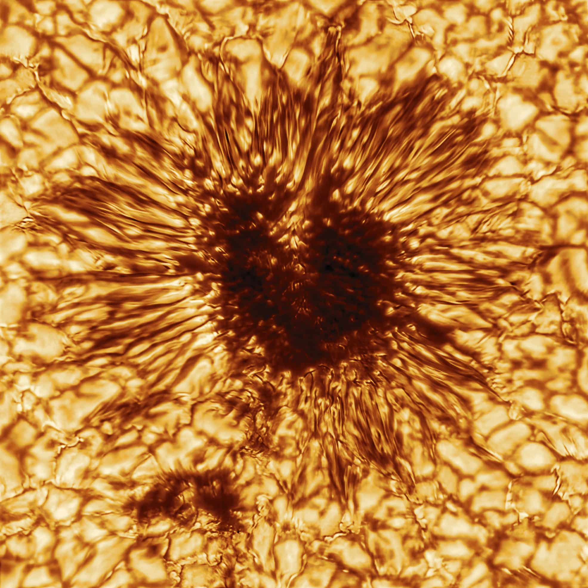
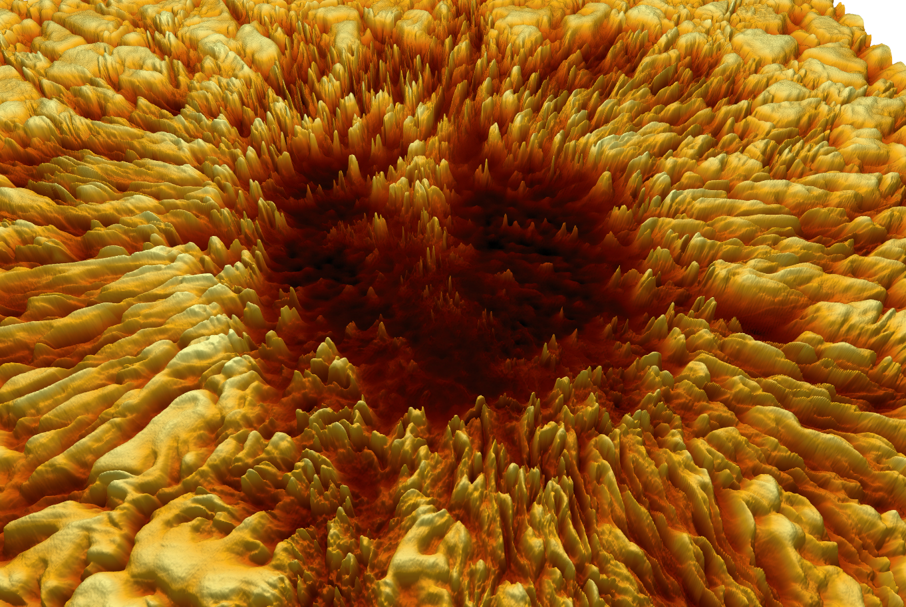
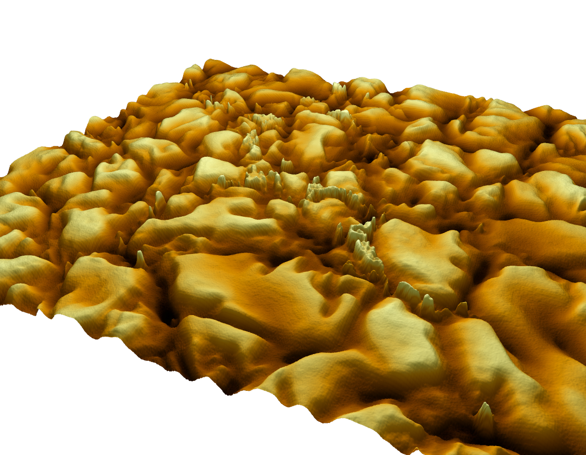

Solar Surface Modeling
These renderings are part of Helionics' early-stage research into solar surface topography using terrain modeling techniques applied to high-resolution sunspot imagery.
These visualizations were created by converting optical intensity data from DKIST's first sunspot release into digital elevation models, then re-texturing them for 3D presentation.
Original DKIST Sunspot Image
3D Terrain Visualizations



This approach demonstrates a potential path toward combining empirical astrophysics with GIS-based modeling techniques. It is part of Helionics’ broader goal to integrate solar physics into energy modeling and emission forecasting tools.
Image credit: National Solar Observatory (NSO), NSF, AURA, DKIST. Visualization and terrain model processing by Jason Steele.